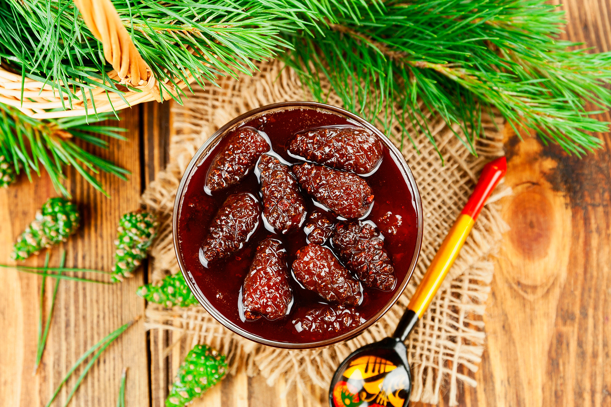

Varenye is a traditional Russian dessert consisting of various fruits and berries cooked together with sugar. The ingredients should not lose their shape, dissolve, or overcook in order for varenye to be properly prepared. Originally, varenye was cooked with honey before 1801 because Russia didn't produce its own sugar, and imported sugar was too expensive.
Meal prep time : 30 minutes
Servings : 1 jar